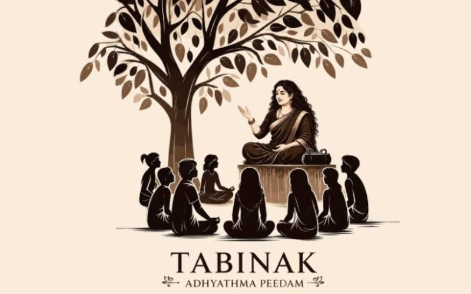

TABINAK ADHYATHMA PEEDAM
A Generation of Inner Harmony
TABINAK ADHYATHMA PEEDAM എന്നത് കുഞ്ഞുങ്ങൾക്ക് വേണ്ടി അവരുടെ നന്മയേറിയ ജീവിതത്തിന്റെയും , മനസ്സിന്റെയും രൂപീകരണത്തിന് വേണ്ടി രൂപംകൊണ്ടിരിക്കുന്ന ജ്ഞാനശാല ആണ്. മദ്യവും മയക്കുമരുന്നും പുതുതലമുറയെ വഴിതെറ്റിക്കുമ്പോൾ അവിടെ അതിനൊരു മാറ്റത്തിന് തുടക്കം കുറിക്കുകയാണ് TABINAK ADHYATHMA PEEDAM. തിരുവനന്തപുരം ആസ്ഥാനമാക്കി ആരംഭിക്കാനൊരുങ്ങുന്ന ഈ മഹത് പ്രസ്ഥാനം ഓൺലൈൻ വഴി പ്രവർത്തനം ആരംഭിച്ചിരിക്കുന്നു.
സൽസ്വഭാവം, കരുണ, സഹജീവികളോടുള്ള സ്നേഹം, മുതിർന്നവരോടുള്ള ആദരവ് എന്നിവയെ ജീവിതത്തിന്റെ അടിസ്ഥാന മൂല്യങ്ങളായി വളർത്തുക എന്നതാണ് ഈ പീഠത്തിന്റെ പ്രത്യേകത. കുടുംബബന്ധങ്ങളെയും സാമൂഹിക ബന്ധങ്ങളെയും ശക്തിപ്പെടുത്തുന്നതിനൊപ്പം, ഓരോ വ്യക്തിയിലും മാനവികതയുടെ വിത്ത് വിതയ്ക്കുക എന്ന ദർശനമാണ് ഇവിടെ നിലനിൽക്കുന്നത്.
ആത്മീയതയെ ഒരു ജീവിതശൈലിയായി മാറ്റി, ആന്തരിക സമാധാനം കണ്ടെത്താൻ സഹായിക്കുന്ന പഠനങ്ങളാണ് ഇവിടെ നൽകുന്നത്.
രാജ്യത്തിന്റെയും ദേശത്തിന്റെയും പുരോഗതിയിൽ ആത്മീയ ബോധമുള്ള വ്യക്തികളുടെ പങ്ക് നിർണായകമാണെന്ന് TABINAK അധ്യാത്മ പീഠം വിശ്വസിക്കുന്നു. ആത്മജാഗ്രതയുള്ള വ്യക്തികൾ സമൂഹത്തിൽ നേതൃത്ത്വം ഏറ്റെടുത്താൽ മാത്രമേ യഥാർത്ഥ മാറ്റം സാദ്ധ്യമാകൂ. അതിനാൽ, വ്യക്തിയുടെ ആത്മവികാസത്തിലൂടെ സമൂഹത്തിനും രാഷ്ട്രത്തിനും ഒരു പുതിയ ദിശ നൽകുക എന്നതാണ് ഈ പീഠത്തിന്റെ മഹത്തായ ലക്ഷ്യം — “പുതു തലമുറയുടെ വെളിച്ചമായി, ലോകത്തിനൊരു ആത്മീയ മാർഗദർശനമായി.”